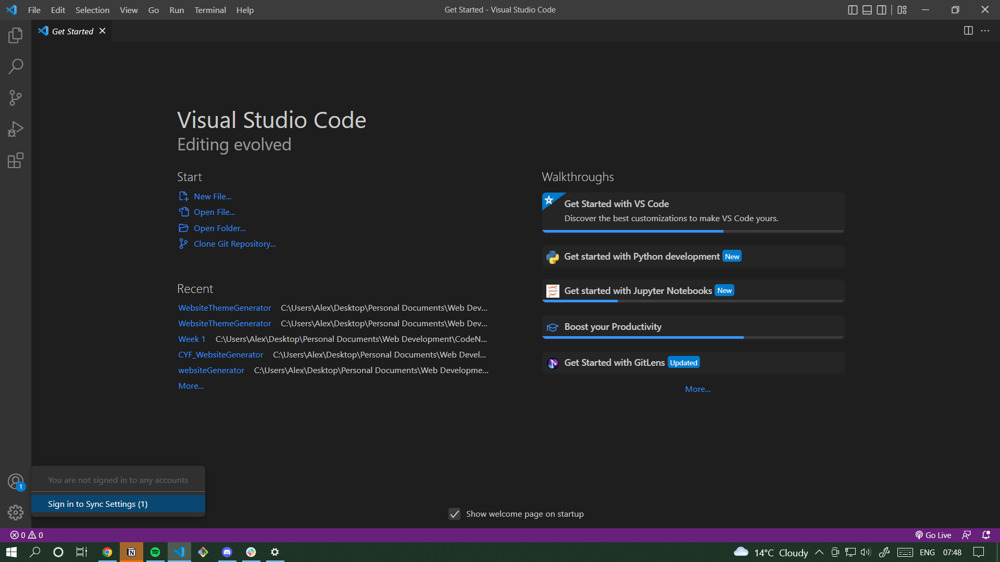

GitHub & VS Code Instructions
- If you haven't already, install VS Code
- Install Git - https://git-scm.com/
- Log in to GitHub - https://github.com/
- Sign in to Git Hub on VS Code - Bottom Left Corner
Choose Sign in with Github
Allow GitHub to access your VSCode

- Find the repository you want to contribute to on GitHub
E.g. https://github.com/a-keyter/WebsiteThemeGenerator

- Click on 'Code' in the right hand corner:

- Copy the HTTPS link / URL from Github
- Open VS Code
(If you need to close last folder, push 'ctrl' + 'k' and then 'f')

- Under 'Start' click on 'Clone Git Repository'
- Paste in the URL you copied from the GitHub repository:

- Create a new folder to store your copy of the repository:

- When the repository has been downloaded,
Click 'Open' in the bottom right corner
- Congratulations, you have just cloned your first repository!